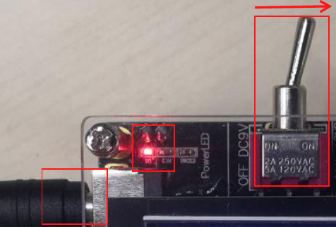
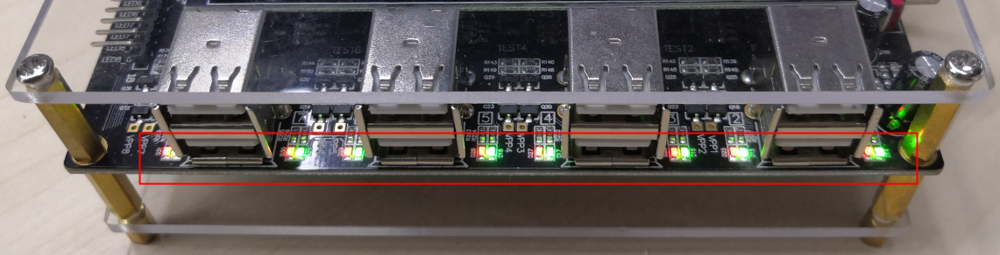
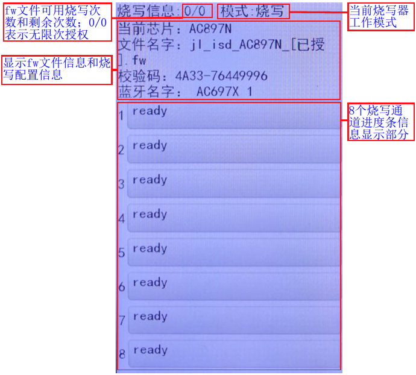

2.6. Status Indicators and Error Messages
2.6.1. LED indicator lights
2.6.1.1. Power indicator light
After connecting the programmer to the 9V power supply, flip the main power toggle switch to the right. The programmer powers on and the power indicator light comes on, as shown in Power indicator light.

Power indicator light
2.6.1.2. Programming status indicator lights
The programming status indicator lights are the LED status indicators of the programmer's 8 channels, as shown in Programming status indicator lights.

Programming status indicator lights
Status indicator light meanings
No. |
Status type |
Red LED |
Green LED |
|---|---|---|---|
1 |
Initial state |
Off |
Off |
2 |
Programming in progress |
Off |
On |
3 |
Programming succeeded |
On |
On |
4 |
Programming failed |
On |
Off |
2.6.2. LCD display
2.6.2.1. Power-on display
When the programmer is powered on, it displays for 3 s a screen with the Jieli LOGO, the customer number, the device ID, the programmer firmware version number and the release date, as shown in Programmer power-on screen.

Programmer power-on screen
2.6.2.2. Normal screen
In the normal screen, the programmer is waiting for devices to be connected. It mainly shows the available and remaining programming counts of the fw file, the current working mode of the programmer, the fw file information and programmer configuration information, and the progress bar area of the 8 programming channels, as shown in Programmer normal screen.
If features such as Bluetooth address auto-increment or authentication code programming are used, the information area of the 8 programming channels also shows the Bluetooth address available for the channel, the authentication code number and other information.

Programmer normal screen
2.6.2.3. Programming progress bar
The colors and information shown in the progress bar of each programming channel are described in the following table.
No. |
Current status |
Progress bar color |
Information displayed |
|---|---|---|---|
1 |
Normal/waiting for programming |
Gray |
Ready, the Bluetooth address to be programmed next, etc. |
2 |
Programming in progress |
Blue |
Erase, write, verify, finish |
3 |
Programming succeeded |
Green |
Success + programming time, etc. |
4 |
Channel error/programming failed |
Red |
Error message |
5 |
Board-change interval too short |
Yellow |
Last programming succeeded (上次烧录成功) |
2.6.3. LCD display error messages
During power-on, while the software of each module is initialized, and while device chip firmware is being programmed, the programmer may encounter errors. All of these errors are shown on the LCD display on the corresponding programming channel.
Some errors that occur during power-on and programming can be cleared from the display only by power-cycling the programmer; other errors are generally cleared once the device chip is disconnected.
The following table lists common LCD error messages and explains them.
Error message |
Description |
|---|---|
02-Communication failed (通信失败) |
Possibly the connection between the device chip and the programmer's USB port is loose or has poor contact. If this error is reported |
03-Verification failed (校验失败) |
The firmware to be verified does not match the target chip firmware or the key file; |
04-KEY error or mismatch (KEY错误或不匹配) |
Blank chip programming: programming the key into the target chip failed, or the key was programmed incorrectly; |
04-ufw does not support blank chip programming (ufw不支持空片烧录) |
A ufw file can only be used to reprogram chips that already have a key programmed (programming blank chips is not supported). |
06-Version mismatch (版本不匹配)_(target chip version) |
The FW file to be programmed does not match the chip version (see Version Mismatch Error); |
06-SDK version error (SDK版本错误)_VX_X_X |
Currently this error exists only for the AD698N and AC638N models. |
07-Erase failed (擦除失败) |
This error generally occurs at the flash erase stage and indicates that the erase failed; the chip's flash may have a problem. The erase may also fail because of poor contact or a communication error; |
08-Programming failed (烧录失败) |
The programmed data is corrupted because of unstable contact between the device and the USB programming port or similar causes during programming |
09-ERR_IQ_TRIM |
This error means that the chip failed a Bluetooth test item; the chip's Bluetooth performance may be faulty. If the error persists after several retries, further analysis is needed |
10-Sampling error, please retry (采样异常，请重试) |
If this error appears, try programming again. It is generally caused by test errors due to factors such as the charging and discharging of the board's peripheral capacitors affecting ADC sampling; when this error is reported, the board and chip are usually fine |
11-RX(measured current)(uA) |
Tests the chip's LNA current to screen out chips whose internal LNA transistors are damaged, i.e. chips with a short receive range and connection problems |
12-Abnormal device current (样机电流异常) |
After the device is plugged into the USB programming port, the USB port current is too high; |
14-DAC test failed (DAC测试失败) |
Tests the various voltages of the DAC module to screen out chips whose DAC parameters do not meet the requirements |
15-VDDIO:(measured voltage)(mV) |
The voltage on the chip's VDDIO pin exceeds the set value of 3800mV; |
15-VDDIO error (VDDIO错误) |
Same as the 15-VDDIO:(measured voltage)(mV) error |
15-Capacity too small (容量太小)_XX_XXXXX |
The data of the fw file to be programmed is larger than the flash capacity of the target chip, so it cannot be programmed; |
16-SFC error (SFC错误) |
The firmware data is verified in SFC mode during programming; a chip that fails repeatedly can be considered defective |
17-Frequency offset calibration timeout (频偏校准超时) |
The test box was not turned on for the test, the "calibration signal frequency point configuration" (校频波频点配置) parameters of the test box and the programmer differ, or the chip's frequency offset cannot be calibrated into the specified range |
18-Bluetooth addresses used up (蓝牙地址已用完) |
With Bluetooth address auto-increment programming configured, all addresses in the configured Bluetooth address range have been used |
Bluetooth address initialization failed (蓝牙地址初始化失败) |
The Bluetooth address settings are incorrect; possibly the Bluetooth address range set at one time is too large (exceeds the u32 range) |
19-Mode error (模式错误) |
This error is reported when programming, verification or blank check of the device chip starts and the mode set with the DIP switch is not one of the three working modes programming, |
20-LRC calibration failed (LRC校准失败) |
For a device with a crystal-less design, the chip's LRC clock parameters cannot be calibrated into the specified range; further analysis is needed |
25-Chip not calibrated (芯片未校准) |
The chip was not calibrated at the factory. |
21-RAM test failed (RAM测试失败) |
The target chip's RAM is abnormal; such chips need to be screened out |
22-MIC test failed (MIC测试失败) |
The MIC of the target device is abnormal, e.g. there is no sound |
23-LVD level not supported (不支持该LVD档位) XXXX |
The chip to be programmed does not support the selected LVD level. |
25-Chip not calibrated (芯片未校准) |
Some of the chip's voltages may not have been calibrated at the factory. In this case, the chip generally needs to be calibrated with a 1-to-2 programmer, using a top board or adapter board that supports calibration |
26-ERR_FMLDO_OPEN |
An error occurred when entering the Bluetooth-related FM power supply test, which in turn caused a USB communication error |
27-ERR_FMLDO_CLOSE |
An error occurred when entering the Bluetooth-related FM power supply test, which in turn caused a USB communication error |
28-Failed to get reserved area (获取保留区出错) |
When the flash is configured not to be fully erased, an error occurred while calculating the area to be preserved during programming. Report it to Jieli engineers for further analysis |
29-FLASH erase error (擦除FLASH出错) |
When the flash is configured not to be fully erased, an error occurred while erasing a specific flash area; this error needs further analysis |
30-Res file programming failed (Res文件烧录失败) |
Programming of a custom resource file failed; a read/write error or a USB communication error may have occurred while this part was being programmed |
31-SFC test communication failed (SFC测试通信失败) |
Possibly a read error during the SFC test caused a USB communication timeout and this error; the flash may be faulty |
32-Algorithm authorization file programming failed (算法授权文件烧录失败) |
Programming of the data used for algorithm authorization failed. Meaning of the error numbers: 6: the algorithm data being programmed differs from the data already in the chip; 8/9: not enough run or |
33-Res file verification failed (Res文件校验失败) |
Verification of a custom resource file failed |
34-LVD error or mismatch (LVD错误或不匹配) |
Possibly writing the LVD voltage value to the chip's storage medium failed during blank chip programming; |
34-IOVDD LEVEL error (IOVDD LEVEL错误) x |
This error indicates that the current configuration does not match the chip's IOVDD level; the chip must have been programmed before. The number in the error is the IOVDD level, where 0 is the lowest level. This error |
35-Failed to write frequency offset calibration value (写入频偏校准值失败) |
Frequency offset calibration was enabled during chip programming, but writing the calibrated value to the chip failed; you can retry |
36-ERR_FLASH_CHECK |
The flash erase check failed. If this error is reported, the chip's flash may be faulty; further analysis is needed. |
37-Failed to read ID (读ID失败) |
Reading the flash id of the target chip failed; |
38-ERR_LNA_OPEN |
An error occurred when entering the Bluetooth LNA current test, which in turn caused a USB communication error |
39-ERR_LNA_CLOSE |
An error occurred when entering the Bluetooth LNA current test, which in turn caused a USB communication error |
40-External FLASH programming failed (外挂FLASH烧录失败) |
Programming the device's external flash failed, possibly because the io configuration of the external flash in the programming file does not match the actual hardware connection, or because of a power supply problem while programming the external flash. |
41-External FLASH verification failed (外挂FLASH校验失败) |
The external flash data differs from the programming file data |
49-Blank check count used up (查空次数已用完) |
Each time the programmer is powered on, each channel is limited to 200 blank checks. Once 200 successful blank checks have been performed, the programmer displays "Blank check count used up" (查空次数已用完). |
57-Authorized count used up (授权次数已用完) |
The programming count of an FW file with an authorized programming count limit has been used up, and the target chip firmware (fw file) in the programmer is now invalid. |
61-Protection parameter lookup failed (保护参数查找失败) |
If |
62-Protection parameter verification failed (保护参数校验失败) |
The protection parameters may not have been written successfully |
63-Protection parameter test failed (保护参数测试失败) |
The protection parameter test failed, and the protection parameters cannot be used properly. |
63-Protection parameter test timeout (保护参数测试超时) |
The protection parameter test timed out, and the protection parameters cannot be used properly. |
63-Protection parameter test conflict (保护参数测试冲突) |
The protection parameters conflict with the programming configuration. |
64-Failed to read FLASH BIN (读取FLASH BIN失败) |
This error is caused by a configuration problem in the ini file: the generated FW contains only a 256-aligned FLASH BIN (the minimum VM erase unit is 256 bytes), whereas |
65-Long-press reset option mismatch (长按复位选项不匹配) |
The long-press reset state does not match the state to be programmed |
66-VM address invalid (VM地址非法) |
This error is reported when the VM address to be preserved or erased is invalid, for example when the address exceeds the flash capacity or overlaps the program area |
67-ERR_CYPTO |
This error is usually reported when programming over a serial port (UART). It may be caused by a UART communication error and typically occurs when there is poor contact |
68-Short-press reset option mismatch (短按复位选项不匹配) |
The short-press reset state does not match the state to be programmed |
69-External FLASH capacity too small (外挂FLASH容量太小) |
When programming external flash, a failure to read the external flash ID can cause the capacity-too-small message; the error is also reported when the file resources to be programmed into the external flash exceed the flash capacity |
70-LNA_BIAS failed (LNA_BIAS失败) |
A Bluetooth-related current test item failed. If this error is reported every time after repeated reprogramming, further analysis may be needed |
71-Secondary programming failed (二次烧录失败) |
Programming of some additional feature data failed |
72-Battery scheme error (电池方案错误) |
This error is reported when the scheme type to be programmed, as selected in the options, does not match the type already in the chip |
73-Not a Dies chip (非Dies芯片) |
Dies chips are generally custom chips. If this error is reported, a custom-chip configuration may have been selected, which cannot be programmed into the current chip |
76-ic_test_timeout |
A chip test item timed out. Uncheck some of the PC tool's test items one at a time to find out which test item causes the timeout |
81-CHIP_LVD(xx)< FLASH_LVD(xx) |
Indicates that the chip's minimum reset voltage (corresponding to the programmer's [LVD voltage] (LVD电压) drop-down option) is lower than the FLASH's minimum operating voltage; xx is the voltage value, in mv. |
82-Frequency offset calibration communication timeout (频偏校准通信超时) |
The frequency offset calibration program could not be sent to the chip, or did not start running. Try checking the device's peripheral circuitry |
82-Frequency offset calibration failed (频偏校准失败) |
The frequency offset calibration program was sent to the chip successfully, but the calibration did not reach the target accuracy, so an error is reported |
83-efuse bin verification failed (efuse bin校验失败) |
If this error is reported when a blank chip is programmed for the first time, the efuse may have been programmed poorly. If the chip is being reprogrammed, the current programming file may be unable to overwrite and match the data already in the chip. If you are sure that the programming |
84-FTMAX/RAM/ROM test failed (FTMAX/RAM/ROM测试失败) |
When the chip is tested with a 240M clock, the corresponding test module cannot run at this clock frequency. The chip may need to be screened out |
85-UMIB test failed (UMIB测试失败) |
A Bluetooth test item failed. If this error is reported every time after repeated programming, the chip may need to be screened out for further analysis |
88-update x |
This error means that the current FW/UFW firmware needs to be updated, or the programmer needs to be upgraded. In update x, x = 128 means the chip is version A, 129 means version B, and so on. Then check which versions are supported in the [Configured chip versions] (配置的芯片版本) item in the white information bar of the FW/UFW file's |
91-FMLDO:%d(uA) |
The test of Bluetooth-related voltage modules such as FM failed. If this error is still reported after reprogramming, further analysis is required |
92-LOOPBACK failed (LOOPBACK失败) |
Bluetooth performance-related parameters are tested during programming, and the parameters do not meet the requirements; |
93-USB unstable, please retry (USB不稳定，请重试) |
A USB communication error occurred. Simply retry as prompted |
94-DACVDD voltage error (DACVDD电压错误) |
A chip test item reported an error. Retry to see whether the error persists. If the error is still reported after several retries, or is also reported when using a 1-to-2 programmer, the chip may have a problem with this test item and needs further analysis |
95-BTPLL test communication error, please retry (BTPLL测试通信出错，请重试) |
A test item reported an error. If the error is still reported after a retry or with another tool, further analysis is required |
96-BTPLL error (BTPLL异常) |
A test item reported an error. If the error is still reported after a retry or with another tool, further analysis is required |
97-UMDC error (UMDC异常) |
A test item reported an error. If the error is still reported after a retry or with another tool, further analysis is required |
98-DC test failed (DC测试失败) |
A test item reported an error. If the error is still reported after a retry or with another tool, further analysis is required |
150-nandflash V1 configuration not supported (不支持nandflash V1配置) |
The current version supports only the V2 configuration and no longer supports the V1 configuration. The difference between V1 and V2 is that the V2 ini file has 2 additional parameters. To program an FW configured with V1 parameters, |
REQUIRE_TARGET_FEATURE |
During programming, the FW was found to contain a flash.bin file, but |
Data receive timeout (接收数据超时) |
This error usually appears near the last step, after the earlier part of the process has communicated and programmed normally. It is usually caused by many large capacitors or other |
efuse bin error 2 (efuse bin错误2) |
This error means that the efuse.bin file packed into the FW file is too long. This is probably caused by an error in the batch script, which needs to be corrected. If you cannot resolve it, contact the person in charge of the Jieli SDK for assistance |
Sampling error, please retry (采样异常，请重试) |
During the device current test, the ADC sampling was abnormal and the data is unreasonable; |
ADC Fail! |
The ADC current test module failed to initialize. Check whether the current test module's power supply, its wiring and the chip itself are normal; |
Programming voltage error (烧录电压错误) |
If this error appears after a remote upgrade, ignore it for now. Deploy the target chip firmware, then restart the programmer and check whether it works normally. If it does not, consult Jieli technical support |
flash bin erro |
This error usually appears during power-on. Check whether a USB cable connected to a computer was plugged in while the programmer was initializing at power-on; in that case the flash that stores the programming file is occupied by the upgrade, and initialization |
FLASH OTP fill error (FLASH OTP填充异常) |
This error is mainly caused by the OTP_CFG_SIZE value in the isd_config.ini file being smaller than the size of the file that describes the FLASH OTP parameters. For some chip models, the SDK setting of 128 may be too |
VBAT: actual sampled value, target voltage value |
This error means that the difference between the VBAT supply pin voltage sampled by the device's chip and the target voltage exceeds the set threshold. For the causes and solutions, see |
Last programming succeeded (上次烧录成功) |
This device was programmed successfully last time and does not need to be reprogrammed. For details, see Board-Change Interval Setting |
Other errors / common defects |
Errors that appear after a test item is checked: the programmer has added test items for certain chip models to screen out chips whose performance parameters do not meet the requirements; |
2.6.4. VBAT voltage error display
In the programming screen, the VBAT voltage is displayed in the format VBAT: actual sampled value, target voltage value, for example: VBAT: 3299, 3400mv
Where:
3299mv: the actual voltage on the VBAT pin, sampled at the device's chip;
3400mv: the target voltage that must be reached at the chip;
When the deviation between the actual sampled voltage and the target voltage exceeds the set threshold, for example 100mv, a VBAT voltage error is reported.
2.6.4.1. Common causes of VBAT voltage errors
Programmer USB_VCC output deviation
The programmer's USB_VCC is adjusted with a potentiometer, so the actual output voltage may deviate somewhat from the set value. The 8 channels of a programmer share one voltage reference source, so ideally all channels output the same voltage; however, because of component variations and potentiometer adjustment, the actual deviation is usually within 30mv.Voltage drop across the USB cable and pogo pin contact resistance
The resistance of the USB cable between the device and the programmer and the contact resistance between the fixture's pogo pins and the device's pads both cause a voltage drop. During programming, the device's current consumption is typically 6–7mA; if the cable resistance and contact resistance add up to about 10Ω, the voltage drop is about 60mv. This is also the main reason why a device that fails programming can pass normally after the fixture is pressed down again.USB_GND return path and sampling error
The programmer's USB_GND line includes a fixed 1Ω resistor, and the crossing of the programming wiring and the ground return paths also has some effect. The device's own sampling may deviate slightly, but this is usually negligible.
2.6.4.2. USB power supply adjustment setting
To offset the programmer's hardware output deviation and the voltage drop caused by the fixture's contact resistance, you can compensate with the [USB power supply adjustment (-1000~+1000)] (USB供电调节) option in the programmer's deployment screen.
Observe the 5 voltage levels printed in the programming progress bar, for example:
If the progress bar shows VCC: 3320 3400, VCC: 3412 3500, VCC: 3526 3600, VCC: 3738 3800, VCC: 4134 4200, the actual sampled voltage of this device during programming is about 70mv lower than the target voltage overall.
You can enter 70 in all 5 edit boxes, or enter the difference for each voltage level in the corresponding edit box. The first edit box corresponds to the 3400mv level, the following ones correspond to successively higher voltage levels,
and the fifth edit box corresponds to the 4200mv level.
If the progress bar shows VCC: 3520 3400, VCC: 3512 3500, VCC: 3626 3600, VCC: 3838 3800, VCC: 4234 4200, the actual sampled voltage of this device during programming is about 20mv higher than the target voltage overall.
You can enter -20 in all 5 edit boxes, or enter each difference separately.
2.6.4.3. Adjustment guidelines
When the actual sampled voltage is generally low, increase the compensation value appropriately, typically by 10–30mv;
When the actual sampled voltage is generally high, decrease the compensation value appropriately, typically by 10–30mv;
Low voltage is usually related to the voltage drop across the USB cable resistance and the pogo pin contact resistance;
High voltage is usually related to the programmer's actual USB_VCC output being higher than the set value.